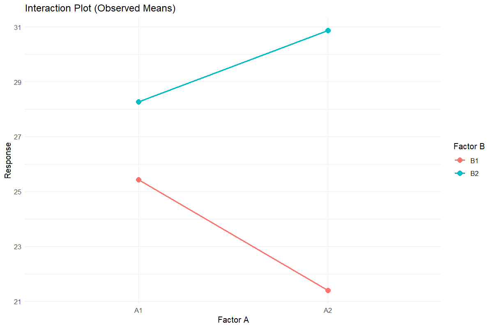
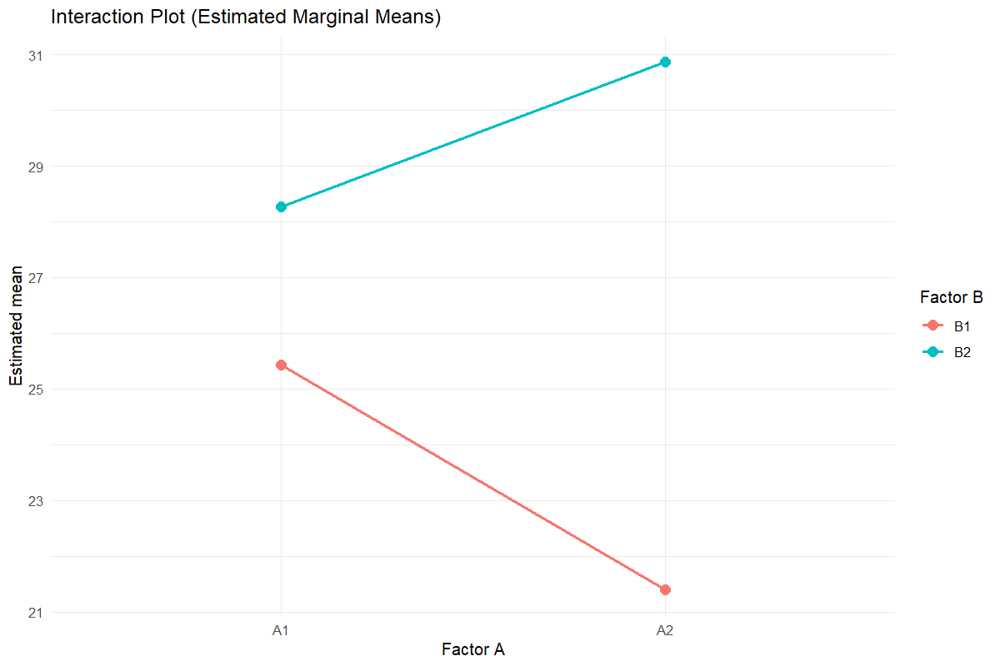
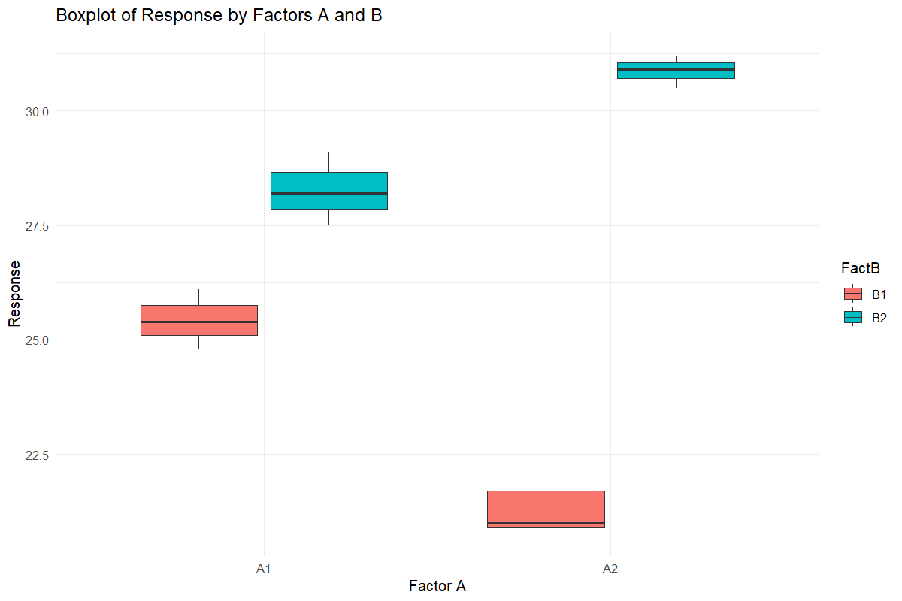
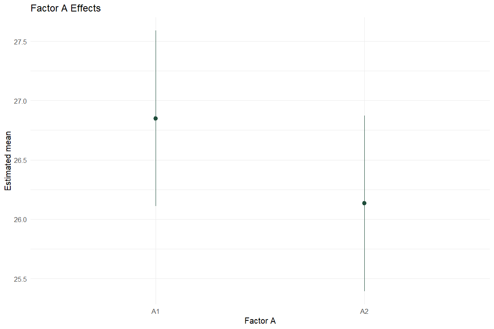
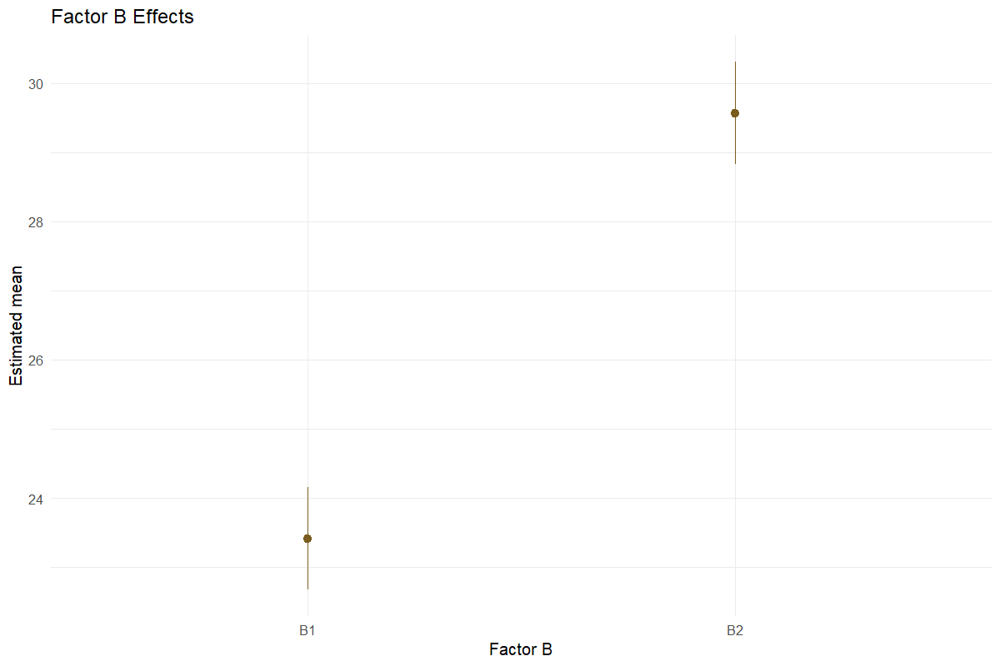

Worked analysis · 2 executable examples
Factorial Design
Retain the interaction and explain the simple effects
Question and data
Provide one row per factor combination, in A-major/B-minor order: A1B1, A1B2, then A2B1, A2B2. Set the actual number of levels and choose CRD or RBD.
Read and report the results
The full factorial model remains the inference model. Report the interaction with main effects and interpret marginal means in that context. Tukey pairwise tables and compact-letter displays are provided; the additive ANOVA is a separate descriptive comparison.
Run the examples
From the repository root, restore the locked dependencies and load the app functions. These are source-checkout examples, not an installed package API.
source("tools/example-cases.R")
load_drdesign()In Shiny, select this module from its workflow heading, upload the example CSV, map the columns, review observations and run. Each R example states the analysis options to reproduce.
Factorial-CRD
Synthetic teaching data; not evidence from a field experiment.
Input
| trt | Rep1 | Rep2 | Rep3 |
|---|---|---|---|
| A1B1 | 25.400 | 26.100 | 24.800 |
| A1B2 | 28.200 | 27.500 | 29.100 |
| A2B1 | 21.000 | 22.400 | 20.800 |
| A2B2 | 30.500 | 31.200 | 30.900 |
Showing up to 8 of 4 observations. The CSV contains every row.
Analysis
data <- read_pasted_table(default_data[["Factorial CRD"]])
result <- run_design_analysis(data, "Factorial CRD", levels_a=2, levels_b=2)Computed output
dataset 12 rows
| Treatment | Rep | Value | Factor A | Factor B |
|---|---|---|---|---|
| A1B1 | Rep1 | 25.400 | A1 | B1 |
| A1B1 | Rep2 | 26.100 | A1 | B1 |
| A1B1 | Rep3 | 24.800 | A1 | B1 |
| A1B2 | Rep1 | 28.200 | A1 | B2 |
| A1B2 | Rep2 | 27.500 | A1 | B2 |
| A1B2 | Rep3 | 29.100 | A1 | B2 |
| A2B1 | Rep1 | 21.000 | A2 | B1 |
| A2B1 | Rep2 | 22.400 | A2 | B1 |
| A2B1 | Rep3 | 20.800 | A2 | B1 |
| A2B2 | Rep1 | 30.500 | A2 | B2 |
| A2B2 | Rep2 | 31.200 | A2 | B2 |
| A2B2 | Rep3 | 30.900 | A2 | B2 |
anova 4 rows
| df | SS | MS | F | p-value | Source / term |
|---|---|---|---|---|---|
| 1 | 1.541 | 1.541 | 3.161 | 0.113 | FactA |
| 1 | 113.467 | 113.467 | 232.754 | <0.001 | FactB |
| 1 | 33.001 | 33.001 | 67.694 | <0.001 | FactA:FactB |
| 8 | 3.900 | 0.487 | NA | NA | Residuals |
stats 6 rows
| Statistic | Value |
|---|---|
| Replications detected | 3.000 |
| Grand Mean | 26.492 |
| Mean Square Error (MSE) | 0.487 |
| Standard Error of Mean - SE(m) | 0.403 |
| Standard Error of Difference - SE(d) | 0.570 |
| Coefficient of Variation - CV (%) | 2.636 |
means 4 rows
| Treatment | Value | std | r | se | LCL | UCL | Min | Max | Q25 | Q50 | Q75 |
|---|---|---|---|---|---|---|---|---|---|---|---|
| A1:B1 | 25.433 | 0.651 | 3.000 | 0.403 | 24.504 | 26.363 | 24.800 | 26.100 | 25.100 | 25.400 | 25.750 |
| A1:B2 | 28.267 | 0.802 | 3.000 | 0.403 | 27.337 | 29.196 | 27.500 | 29.100 | 27.850 | 28.200 | 28.650 |
| A2:B1 | 21.400 | 0.872 | 3.000 | 0.403 | 20.470 | 22.330 | 20.800 | 22.400 | 20.900 | 21.000 | 21.700 |
| A2:B2 | 30.867 | 0.351 | 3.000 | 0.403 | 29.937 | 31.796 | 30.500 | 31.200 | 30.700 | 30.900 | 31.050 |
lsd_stats 6 rows
| Source / term | Metric | Value |
|---|---|---|
| MSerror | MSerror | 0.487 |
| Df | Df | 8.000 |
| Mean | Mean | 26.492 |
| CV | CV | 2.636 |
| t.value | t value | 2.306 |
| LSD | LSD | 1.315 |
factorial full_anova 4 rows
| df | SS | MS | F | p-value | Source / term |
|---|---|---|---|---|---|
| 1 | 1.541 | 1.541 | 3.161 | 0.113 | FactA |
| 1 | 113.467 | 113.467 | 232.754 | <0.001 | FactB |
| 1 | 33.001 | 33.001 | 67.694 | <0.001 | FactA:FactB |
| 8 | 3.900 | 0.487 | NA | NA | Residuals |
factorial additive_anova 3 rows
| df | SS | MS | F | p-value | Source / term |
|---|---|---|---|---|---|
| 1 | 1.541 | 1.541 | 0.376 | 0.555 | FactA |
| 1 | 113.467 | 113.467 | 27.674 | <0.001 | FactB |
| 9 | 36.901 | 4.100 | NA | NA | Residuals |
factorial assumptions 3 rows
| Metric | Value |
|---|---|
| Alpha | 0.050 |
| Interaction p-value | <0.001 |
| Selected final model | Interaction model |
factorial diagnostics 12 rows
| Observation | Fitted | Residual |
|---|---|---|
| 1 | 25.433 | -0.033 |
| 2 | 25.433 | 0.667 |
| 3 | 25.433 | -0.633 |
| 4 | 28.267 | -0.067 |
| 5 | 28.267 | -0.767 |
| 6 | 28.267 | 0.833 |
| 7 | 21.400 | -0.400 |
| 8 | 21.400 | 1.000 |
| 9 | 21.400 | -0.600 |
| 10 | 30.867 | -0.367 |
| 11 | 30.867 | 0.333 |
| 12 | 30.867 | 0.033 |
factorial emmeans_interaction 4 rows
| Factor A | Factor B | Estimated mean | SE | df | CI lower | CI upper |
|---|---|---|---|---|---|---|
| A1 | B1 | 25.433 | 0.403 | 8 | 24.504 | 26.363 |
| A2 | B1 | 21.400 | 0.403 | 8 | 20.470 | 22.330 |
| A1 | B2 | 28.267 | 0.403 | 8 | 27.337 | 29.196 |
| A2 | B2 | 30.867 | 0.403 | 8 | 29.937 | 31.796 |
Confidence level used: 0.95
factorial emmeans_a 2 rows
| Factor A | Estimated mean | SE | df | CI lower | CI upper |
|---|---|---|---|---|---|
| A1 | 26.850 | 0.285 | 8 | 26.193 | 27.507 |
| A2 | 26.133 | 0.285 | 8 | 25.476 | 26.791 |
Results are averaged over the levels of: FactB
Confidence level used: 0.95
factorial emmeans_b 2 rows
| Factor B | Estimated mean | SE | df | CI lower | CI upper |
|---|---|---|---|---|---|
| B1 | 23.417 | 0.285 | 8 | 22.759 | 24.074 |
| B2 | 29.567 | 0.285 | 8 | 28.909 | 30.224 |
Results are averaged over the levels of: FactA
Confidence level used: 0.95
factorial tukey_interaction 6 rows
| contrast | estimate | SE | df | t | p-value |
|---|---|---|---|---|---|
| A1 B1 - A2 B1 | 4.033 | 0.570 | 8 | 7.075 | <0.001 |
| A1 B1 - A1 B2 | -2.833 | 0.570 | 8 | -4.970 | 0.005 |
| A1 B1 - A2 B2 | -5.433 | 0.570 | 8 | -9.531 | <0.001 |
| A2 B1 - A1 B2 | -6.867 | 0.570 | 8 | -12.045 | <0.001 |
| A2 B1 - A2 B2 | -9.467 | 0.570 | 8 | -16.606 | <0.001 |
| A1 B2 - A2 B2 | -2.600 | 0.570 | 8 | -4.561 | 0.008 |
P value adjustment: tukey method for comparing a family of 4 estimates
Results are averaged over the levels of: FactB
factorial tukey_b 1 rows
| contrast | estimate | SE | df | t | p-value |
|---|---|---|---|---|---|
| B1 - B2 | -6.150 | 0.403 | 8 | -15.256 | <0.001 |
Results are averaged over the levels of: FactA
factorial cld_interaction 4 rows
| Source / term | Factor A | Factor B | Estimated mean | SE | df | CI lower | CI upper | Group |
|---|---|---|---|---|---|---|---|---|
| 2 | A2 | B1 | 21.400 | 0.403 | 8 | 20.113 | 22.687 | a |
| 1 | A1 | B1 | 25.433 | 0.403 | 8 | 24.146 | 26.721 | b |
| 3 | A1 | B2 | 28.267 | 0.403 | 8 | 26.979 | 29.554 | c |
| 4 | A2 | B2 | 30.867 | 0.403 | 8 | 29.579 | 32.154 | d |
Confidence level used: 0.95
Conf-level adjustment: sidak method for 4 estimates
P value adjustment: tukey method for comparing a family of 4 estimates
significance level used: alpha = 0.05
NOTE: If two or more means share the same grouping symbol, then we cannot show them to be different. But we also did not show them to be the same.
factorial cld_a 2 rows
| Source / term | Factor A | Estimated mean | SE | df | CI lower | CI upper | Group |
|---|---|---|---|---|---|---|---|
| 2 | A2 | 26.133 | 0.285 | 8 | 25.351 | 26.915 | a |
| 1 | A1 | 26.850 | 0.285 | 8 | 26.068 | 27.632 | a |
Results are averaged over the levels of: FactB
Confidence level used: 0.95
Conf-level adjustment: sidak method for 2 estimates
significance level used: alpha = 0.05
NOTE: If two or more means share the same grouping symbol, then we cannot show them to be different. But we also did not show them to be the same.
factorial cld_b 2 rows
| Factor B | Estimated mean | SE | df | CI lower | CI upper | Group |
|---|---|---|---|---|---|---|
| B1 | 23.417 | 0.285 | 8 | 22.635 | 24.199 | a |
| B2 | 29.567 | 0.285 | 8 | 28.785 | 30.349 | b |
Results are averaged over the levels of: FactA
Confidence level used: 0.95
Conf-level adjustment: sidak method for 2 estimates
significance level used: alpha = 0.05
NOTE: If two or more means share the same grouping symbol, then we cannot show them to be different. But we also did not show them to be the same.



Factorial-RBD
Synthetic teaching data; not evidence from a field experiment.
Input
| trt | Rep1 | Rep2 | Rep3 |
|---|---|---|---|
| A1B1 | 25.400 | 26.100 | 24.800 |
| A1B2 | 28.200 | 27.500 | 29.100 |
| A2B1 | 21.000 | 22.400 | 20.800 |
| A2B2 | 30.500 | 31.200 | 30.900 |
Showing up to 8 of 4 observations. The CSV contains every row.
Analysis
data <- read_pasted_table(default_data[["Factorial RBD"]])
result <- run_design_analysis(data, "Factorial RBD", levels_a=2, levels_b=2)Computed output
dataset 12 rows
| Treatment | Rep | Value | Factor A | Factor B |
|---|---|---|---|---|
| A1B1 | Rep1 | 25.400 | A1 | B1 |
| A1B1 | Rep2 | 26.100 | A1 | B1 |
| A1B1 | Rep3 | 24.800 | A1 | B1 |
| A1B2 | Rep1 | 28.200 | A1 | B2 |
| A1B2 | Rep2 | 27.500 | A1 | B2 |
| A1B2 | Rep3 | 29.100 | A1 | B2 |
| A2B1 | Rep1 | 21.000 | A2 | B1 |
| A2B1 | Rep2 | 22.400 | A2 | B1 |
| A2B1 | Rep3 | 20.800 | A2 | B1 |
| A2B2 | Rep1 | 30.500 | A2 | B2 |
| A2B2 | Rep2 | 31.200 | A2 | B2 |
| A2B2 | Rep3 | 30.900 | A2 | B2 |
anova 5 rows
| df | SS | MS | F | p-value | Source / term |
|---|---|---|---|---|---|
| 2 | 0.602 | 0.301 | 0.547 | 0.605 | Rep |
| 1 | 1.541 | 1.541 | 2.803 | 0.145 | FactA |
| 1 | 113.467 | 113.467 | 206.409 | <0.001 | FactB |
| 1 | 33.001 | 33.001 | 60.032 | <0.001 | FactA:FactB |
| 6 | 3.298 | 0.550 | NA | NA | Residuals |
stats 6 rows
| Statistic | Value |
|---|---|
| Replications detected | 3.000 |
| Grand Mean | 26.492 |
| Mean Square Error (MSE) | 0.550 |
| Standard Error of Mean - SE(m) | 0.428 |
| Standard Error of Difference - SE(d) | 0.605 |
| Coefficient of Variation - CV (%) | 2.799 |
means 4 rows
| Treatment | Value | std | r | se | LCL | UCL | Min | Max | Q25 | Q50 | Q75 |
|---|---|---|---|---|---|---|---|---|---|---|---|
| A1:B1 | 25.433 | 0.651 | 3.000 | 0.428 | 24.386 | 26.481 | 24.800 | 26.100 | 25.100 | 25.400 | 25.750 |
| A1:B2 | 28.267 | 0.802 | 3.000 | 0.428 | 27.219 | 29.314 | 27.500 | 29.100 | 27.850 | 28.200 | 28.650 |
| A2:B1 | 21.400 | 0.872 | 3.000 | 0.428 | 20.353 | 22.447 | 20.800 | 22.400 | 20.900 | 21.000 | 21.700 |
| A2:B2 | 30.867 | 0.351 | 3.000 | 0.428 | 29.819 | 31.914 | 30.500 | 31.200 | 30.700 | 30.900 | 31.050 |
lsd_stats 6 rows
| Source / term | Metric | Value |
|---|---|---|
| MSerror | MSerror | 0.550 |
| Df | Df | 6.000 |
| Mean | Mean | 26.492 |
| CV | CV | 2.799 |
| t.value | t value | 2.447 |
| LSD | LSD | 1.481 |
factorial full_anova 5 rows
| df | SS | MS | F | p-value | Source / term |
|---|---|---|---|---|---|
| 2 | 0.602 | 0.301 | 0.547 | 0.605 | Rep |
| 1 | 1.541 | 1.541 | 2.803 | 0.145 | FactA |
| 1 | 113.467 | 113.467 | 206.409 | <0.001 | FactB |
| 1 | 33.001 | 33.001 | 60.032 | <0.001 | FactA:FactB |
| 6 | 3.298 | 0.550 | NA | NA | Residuals |
factorial additive_anova 4 rows
| df | SS | MS | F | p-value | Source / term |
|---|---|---|---|---|---|
| 2 | 0.602 | 0.301 | 0.058 | 0.944 | Rep |
| 1 | 1.541 | 1.541 | 0.297 | 0.603 | FactA |
| 1 | 113.467 | 113.467 | 21.881 | 0.002 | FactB |
| 7 | 36.299 | 5.186 | NA | NA | Residuals |
factorial assumptions 3 rows
| Metric | Value |
|---|---|
| Alpha | 0.050 |
| Interaction p-value | <0.001 |
| Selected final model | Interaction model |
factorial diagnostics 12 rows
| Observation | Fitted | Residual |
|---|---|---|
| 1 | 25.217 | 0.183 |
| 2 | 25.742 | 0.358 |
| 3 | 25.342 | -0.542 |
| 4 | 28.050 | 0.150 |
| 5 | 28.575 | -1.075 |
| 6 | 28.175 | 0.925 |
| 7 | 21.183 | -0.183 |
| 8 | 21.708 | 0.692 |
| 9 | 21.308 | -0.508 |
| 10 | 30.650 | -0.150 |
| 11 | 31.175 | 0.025 |
| 12 | 30.775 | 0.125 |
factorial emmeans_interaction 4 rows
| Factor A | Factor B | Estimated mean | SE | df | CI lower | CI upper |
|---|---|---|---|---|---|---|
| A1 | B1 | 25.433 | 0.428 | 6 | 24.386 | 26.481 |
| A2 | B1 | 21.400 | 0.428 | 6 | 20.353 | 22.447 |
| A1 | B2 | 28.267 | 0.428 | 6 | 27.219 | 29.314 |
| A2 | B2 | 30.867 | 0.428 | 6 | 29.819 | 31.914 |
Results are averaged over the levels of: Rep
Confidence level used: 0.95
factorial emmeans_a 2 rows
| Factor A | Estimated mean | SE | df | CI lower | CI upper |
|---|---|---|---|---|---|
| A1 | 26.850 | 0.303 | 6 | 26.109 | 27.591 |
| A2 | 26.133 | 0.303 | 6 | 25.393 | 26.874 |
Results are averaged over the levels of: Rep, FactB
Confidence level used: 0.95
factorial emmeans_b 2 rows
| Factor B | Estimated mean | SE | df | CI lower | CI upper |
|---|---|---|---|---|---|
| B1 | 23.417 | 0.303 | 6 | 22.676 | 24.157 |
| B2 | 29.567 | 0.303 | 6 | 28.826 | 30.307 |
Results are averaged over the levels of: Rep, FactA
Confidence level used: 0.95
factorial tukey_interaction 6 rows
| contrast | estimate | SE | df | t | p-value |
|---|---|---|---|---|---|
| A1 B1 - A2 B1 | 4.033 | 0.605 | 6 | 6.663 | 0.002 |
| A1 B1 - A1 B2 | -2.833 | 0.605 | 6 | -4.680 | 0.013 |
| A1 B1 - A2 B2 | -5.433 | 0.605 | 6 | -8.975 | <0.001 |
| A2 B1 - A1 B2 | -6.867 | 0.605 | 6 | -11.343 | <0.001 |
| A2 B1 - A2 B2 | -9.467 | 0.605 | 6 | -15.638 | <0.001 |
| A1 B2 - A2 B2 | -2.600 | 0.605 | 6 | -4.295 | 0.020 |
Results are averaged over the levels of: Rep
P value adjustment: tukey method for comparing a family of 4 estimates
Results are averaged over the levels of: Rep, FactB
factorial tukey_b 1 rows
| contrast | estimate | SE | df | t | p-value |
|---|---|---|---|---|---|
| B1 - B2 | -6.150 | 0.428 | 6 | -14.367 | <0.001 |
Results are averaged over the levels of: Rep, FactA
factorial cld_interaction 4 rows
| Source / term | Factor A | Factor B | Estimated mean | SE | df | CI lower | CI upper | Group |
|---|---|---|---|---|---|---|---|---|
| 2 | A2 | B1 | 21.400 | 0.428 | 6 | 19.899 | 22.901 | a |
| 1 | A1 | B1 | 25.433 | 0.428 | 6 | 23.933 | 26.934 | b |
| 3 | A1 | B2 | 28.267 | 0.428 | 6 | 26.766 | 29.767 | c |
| 4 | A2 | B2 | 30.867 | 0.428 | 6 | 29.366 | 32.367 | d |
Results are averaged over the levels of: Rep
Confidence level used: 0.95
Conf-level adjustment: sidak method for 4 estimates
P value adjustment: tukey method for comparing a family of 4 estimates
significance level used: alpha = 0.05
NOTE: If two or more means share the same grouping symbol, then we cannot show them to be different. But we also did not show them to be the same.
factorial cld_a 2 rows
| Source / term | Factor A | Estimated mean | SE | df | CI lower | CI upper | Group |
|---|---|---|---|---|---|---|---|
| 2 | A2 | 26.133 | 0.303 | 6 | 25.238 | 27.029 | a |
| 1 | A1 | 26.850 | 0.303 | 6 | 25.954 | 27.746 | a |
Results are averaged over the levels of: Rep, FactB
Confidence level used: 0.95
Conf-level adjustment: sidak method for 2 estimates
significance level used: alpha = 0.05
NOTE: If two or more means share the same grouping symbol, then we cannot show them to be different. But we also did not show them to be the same.
factorial cld_b 2 rows
| Factor B | Estimated mean | SE | df | CI lower | CI upper | Group |
|---|---|---|---|---|---|---|
| B1 | 23.417 | 0.303 | 6 | 22.521 | 24.312 | a |
| B2 | 29.567 | 0.303 | 6 | 28.671 | 30.462 | b |
Results are averaged over the levels of: Rep, FactA
Confidence level used: 0.95
Conf-level adjustment: sidak method for 2 estimates
significance level used: alpha = 0.05
NOTE: If two or more means share the same grouping symbol, then we cannot show them to be different. But we also did not show them to be the same.





Reporting conventions
Tables: estimates and standard errors to 3 decimals; p-values below 0.001 shown as <0.001. Very small or large values use scientific notation. NA means unavailable or not applicable. CSV files retain numerical precision. Confidence levels and multiplicity corrections follow the stated analysis settings; shared letters indicate non-rejection, not equivalence.